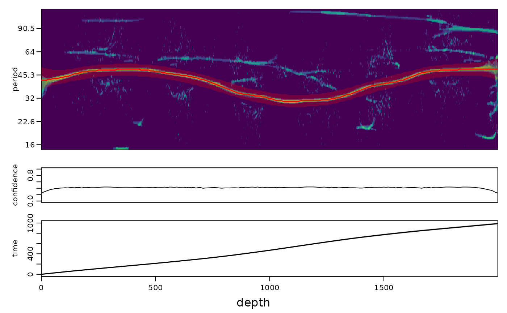

Continuous tracking of a cycle in a (synchrosqueezed) scalogram with a hidden Markov model
Source:R/track_hmm.R
track_ridge_hmm.RdTracks the period of one cycle continuously through a scalogram made by
analyse_wavelet, analyse_wavelet_sst, analyse_superlet_sst,
analyse_conceft or any object of class analyze.wavelet. Sharp synchrosqueezed scalograms can have
gaps where the cycle is weak (low eccentricity, noise, a facies change), which makes manual or ridge-by-ridge tracking
discontinuous. Here the period at every position is a hidden state that follows a random walk (the sedimentation rate
changes gradually, with an optional small probability of an abrupt change, e.g. at a hiatus) and the scalogram is the
evidence. The forward-backward algorithm combines the evidence of the whole record: where the cycle is clear it fixes the
period, and through gaps the track is bridged by the neighbouring evidence and by the fallback scalogram (the ordinary
wavelet power, which is never empty). The result is a continuous curve with
the most probable path (Viterbi),
the posterior mean and a credible band of the period at every position,
a confidence value (the posterior probability within 2 percent of the tracked period), which shows where the track is constrained by data and where it is interpolated,
optionally (
period_of_tracked_cycle) the sedimentation rate and an age model with uncertainty from paths sampled from the posterior.
The first two columns (depth, period) can be used directly by curve2time and the other functions that
take a tracked curve.
Usage
track_ridge_hmm(
wavelet,
period = NULL,
guide = NULL,
guide_tolerance = 0.25,
sd_change = 0.1,
jump_prob = 0.001,
smooth_period = 0.02,
smooth_depth = NULL,
fallback = "cwt",
fallback_weight = 0.2,
sharpness = 0.5,
n_positions = 1500,
period_of_tracked_cycle = NULL,
n_samples = 200,
level = 0.95,
jump_depths = NULL,
constraints = NULL,
jump_prob_at = 0.05,
seed = 1
)Arguments
- wavelet
Scalogram to track (list of class
analyze.wavelet), the output ofanalyse_wavelet,analyse_wavelet_sst,analyse_superlet_sst,analyse_conceftor a similar function; its elementsPower,Period,axis.1,dt,dj,xandyare used. Required, no default.- period
Period band in which the cycle is searched (numeric vector
c(lower, upper), in the depth/time unit of the record; must hold at least three periods of the scalogram). Eitherperiodorguidemust be given; with a guide the band is taken from the guide instead.Default=NULL.- guide
Optional rough track of the cycle (two-column data frame or matrix: depth in column 1, period in column 2, in depth units), e.g. from
track_period_waveletor a previous run. It is interpolated to all positions (constant beyond its ends) and the search is restricted toguide * (1 +- guide_tolerance);NULLusesperiodonly.Default=NULL.- guide_tolerance
Relative half width of the search band around
guide(numeric, > 0; e.g. 0.25 allows periods from 0.8 to 1.25 times the guide).Default=0.25.- sd_change
Standard deviation of the change of log2(period) over a distance of one period (numeric, > 0); it sets how smoothly the track may wander. 0.1 is about 7 percent per cycle; larger values follow faster changes of the sedimentation rate, smaller values give a smoother track.
Default=0.1.- jump_prob
Probability of an abrupt change of the period (a jump to any period of the band) between neighbouring positions of the track (numeric, between 0 and 1).
Default=1e-3.- smooth_period
Gaussian smoothing of the scalogram along the period axis before tracking (numeric, >= 0; the standard deviation in octaves; 0 switches it off).
Default=0.02.- smooth_depth
Width of the moving average of the scalogram along the record before tracking (numeric, in depth units, >= 0);
NULLuses the lower limit of the band (one shortest period).Default=NULL.- fallback
Second source of evidence that is mixed in where the scalogram is empty (sharp synchrosqueezed maps):
"cwt"the normalised Morlet wavelet power (the elementPower_cwtofwaveletif present, otherwise computed withanalyse_wavelet,omega_nr = 8), another scalogram object (list with aPowermatrix on the same grid aswavelet), or"none"(no fallback).Default="cwt".- fallback_weight
Weight of the fallback evidence in the mix (numeric, between 0 and 1; the scalogram gets
1 - fallback_weight); 0 switches the fallback off.Default=0.2.- sharpness
Weight of the evidence relative to the smoothness of the track (numeric, > 0). Because neighbouring positions of a scalogram are not independent, the log evidence is scaled so that one period of the cycle counts as one observation; larger values trust the scalogram more and give narrower credible bands; with 0.5 the 95 percent bands of the age model contained the true age 95 to 100 percent of the time in synthetic tests.
Default=0.5.- n_positions
Maximum number of positions along the record at which the track is computed (integer, > 1); the result is interpolated to all positions of the scalogram. Fewer positions are used when they would be closer than a quarter of the (geometric mean) period of the band.
Default=1500.- period_of_tracked_cycle
Optional duration of the tracked cycle in time units (numeric, e.g. 405 for the 405-kyr eccentricity cycle). If given, the sedimentation rate (period /
period_of_tracked_cycle) and an age model with uncertainty from posterior paths are added; it is required forconstraints;NULLreturns only the period track.Default=NULL.- n_samples
Number of paths drawn from the posterior to compute the uncertainty of the sedimentation rate and of the age model (integer, >= 1); only used with
period_of_tracked_cycle.Default=200.- level
Probability content of the credible bands (numeric, between 0 and 1, e.g. 0.95 for the 2.5 to 97.5 percent quantiles).
Default=0.95.- jump_depths
Optional depths where an abrupt change of the sedimentation rate is plausible (numeric vector, in depth units): a hiatus, erosion surface, abrupt facies change or tectonic contact known from the field or from a change-point analysis such as
bayes_changepoint. Within 1.5 track steps of these depths the jump probability is raised tojump_prob_at. Abrupt changes are hard to detect from the scalogram alone in noisy records, so giving them helps the track to follow the jump instead of smoothing it.Default=NULL(none).- constraints
Optional geological duration constraints (data frame, one row per constraint; the first three columns are read as
from,to(depths) andduration(time, in the unit ofperiod_of_tracked_cycle, e.g. kyr); an optional columntolerancegives the allowed relative deviation, default 0.025), for instance a biostratigraphic bracket, the time between two dated ash beds or the duration of a stage known from another section. Intervals must not overlap. Needsperiod_of_tracked_cycle. The track is then the most probable one that satisfies them: the evidence is tilted by a Lagrange multiplier times the time spent in each interval, with the multiplier found by bisection so that the interval has the required duration. The achieved durations and multipliers are returned in the attributeconstraints.Default=NULL(none).- jump_prob_at
Jump probability between neighbouring positions near
jump_depths(numeric, between 0 and 1; replacesjump_probthere if larger).Default=0.05.- seed
Seed of the random number generator for the posterior sampling (integer), so that the credible bands of the age model can be reproduced; the random state of the session is restored afterwards.
Default=1.
Value
A data frame of class wr_track with the columns depth, period (Viterbi path),
period_mean, period_lower, period_upper, confidence and, with
period_of_tracked_cycle, sedrate (depth units per time unit), sedrate_lower, sedrate_upper,
time, time_lower and time_upper (time since the top/start of the record).
References
Rabiner, L.R., 1989. A tutorial on hidden Markov models and selected applications in speech recognition. Proceedings of the IEEE 77, 257-286.
Carmona, R.A., Hwang, W.L., Torresani, B., 1997. Characterization of signals by the ridges of their wavelet transforms. IEEE Transactions on Signal Processing 45, 2586-2590.
Examples
# \donttest{
set.seed(1)
z <- 0:1999
Pt <- 40 + 10 * sin(2 * pi * z / 1500)
amp <- 0.3 + abs(sin(2 * pi * z / 600))
x <- amp * sin(2 * pi * cumsum(1 / Pt)) + rnorm(length(z), sd = 0.5)
s <- analyse_superlet_sst(data.frame(z, x), lowerPeriod = 15, upperPeriod = 120, dj = 1 / 50)
tr <- track_ridge_hmm(s, period = c(25, 70), period_of_tracked_cycle = 20)
plot_track(tr, s)

# }